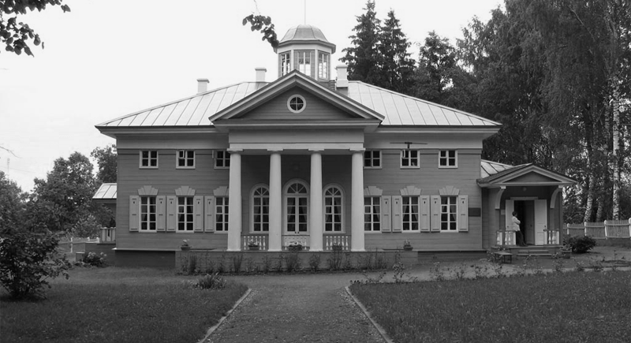

Мне видится мое селенье,
Мое Захарово; оно
С заборами в реке волнистой,
С мостом и рощею тенистой
Зерцалом вод отражено…
Прекрасный парк Подмосковья расположен в Одинцовском районе, в деревне Захарово, более известной как «колыбель гения юного Александра Пушкина». Тенистые своды деревьев, продуманное освещение, красота природного ландшафта привлекают посетителей парка для неспешных прогулок и романтических свиданий, а открытые зоны площадок и дорожек с совре-менным покрытием - для активного спорта и отдыха всей семьей.
Вековые деревья и каскад прудов создают неповторимую атмосферу комфорта и спокойствия, кажется, что здесь природа и поэзия сливаются воедино, сказка и быль, реальный мир и «зазеркалье», отраженное гладью воды. Здесь как-то особенно остро чувствуется веяние времени – история и современ-ность, раздолье и благодать.
Парк предназначен для тихого спокойного отдохновения и созер-цания окружающей природы, прогулок и бесед. Территория парка включает в себя несколько пло-щадок это: Русская деревня, Поляна сказок, Малая поляна с летней эстрадой и танцевальной площадкой, Аллея Славы, Яблоневый сад, спортивная и детская площадка. Рядом с парком нахо-дится Государственный историко-литературный музей-заповедник А. С. Пушкина, скульптурные композиции, Храм благоверных святых кн. Петра и кн. Февронии.
Парк Захарово – молодой, активно развивающийся парк, существующий с февраля 2015 го-да. За это время созданы удобные пешеходные дорожки, установлены парковые скамейки и улич-ное освещение, создана Поляна Сказок. Парк становится популярным и любимым местом отдыха для местных жителей и многочисленных туристов. Для посетителей парка с мая 2016 года начина-ется аудио вещание сказок и лирики А.С. Пушкина, передач о ВОВ «Календарь Победы» и «Стра-ницы лет минувших», для всех желающих еженедельно проходят бесплатные фитнес - тренировки с опытным преподавателем. В Парке проводятся праздники, мастер- классы, фестивали, концерты, конкурсы и многое другое. С мая месяца и на весь летний период свои двери открывает наш ма-ленький «Театр Сказок». Парк Захарово работает для вас, приходите, мы вам рады.